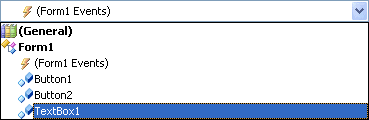
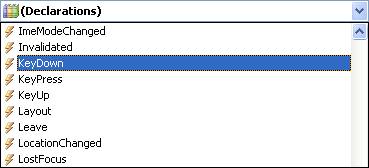
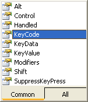
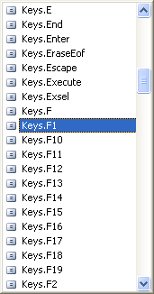

The KeyDown Event in VB .NET
Another useful event is the KeyDown event. As its name suggest, this allows you to detect when a key on the keyboard was held down. This is useful for things like validating text in a textbox.
To test it out, add a textbox to your form. (If you haven't been following the lessons, just start a new project and add a textbox to your new form.). Change the Text property of the textbox to "Press F1 for help." Locate the TabIndex property in the Property Box, and change it to zero. (The Tab Index sets which control is selected when the Tab key is pressed on the keyboard. By specifying zero as the TabIndex property, you're saying that this should be the first control selected.)
Bring up your code window and click the arrow that reveals the list of controls and objects in your project:

Click on your textbox from the list to select it, as in the image above. Then click the arrow on the Event drop down box to reveal the events available to the textbox. Scroll down and select the KeyDown event:

When you select the KeyDown event, a code stub appears:
Private Sub TextBox1_KeyDown(ByVal sender As Object, ByVal e As System.Windows.Forms.KeyEventArgs) Handles TextBox1.KeyDown
End Sub
The event that is being Handled is the KeyDown event of TextBox1. Notice, though, that there is a slightly different argument in round brackets (just e As KeyEventArgs in version 2012):
ByVal e As System.Windows.Forms.KeyEventArgs
Again, the variable name is still e. But now we have something called KeyEventArgs on the end. This means that the variable e will hold information about the Key on the keyboard that you're trying to detect.
No more reading these lessons online - get the eBook here!
To see what properties the e variable has available to it, add the following to your TextBox1_KeyDown code:
If e.KeyCode = Keys.F1 Then
TextBox1.Clear()
MsgBox("Help!!!")
End If
As soon as you type the full stop after the letter "e", you'll see this pop up box:

Double click a property to add it to your code. After you type an equals sign, you'll get another pop up box:

The list is a list of keys on your keyboard, some of which you'll have and others that you won't. Scroll down the list until you come to Keys.F1, and double click the item to add it to your code.
The code for the If Statement just clears the textbox and pops up a message.
Try your programme out. Press F1 (If you set TextIndex to zero then the text in the textbox should be selected, and the cursor already flashing. If it's not, click inside of the textbox and then press F1). When the F1 key is pressed, you should see the message box appear.
Another thing you can do is to record the keystrokes a user makes. For example:
Dim RecordText as String
RecordText = RecordText & Chr( e.KeyCode )
MsgBox(RecordText)
The Chr( ) function converts a KeyCode (which is an integer) to its keyboard character.
But try this exercise.
Exercise N
There is an event available to the textbox called Leave. Add another textbox to your form, and write code so that the letters in a postcode are converted to uppercase when the user clicks from your first textbox and into your second textbox.
So your first textbox might read "ts1 4jh". When the user clicks inside textbox2, the text from textbox1 should change to "TS1 4JH". The code can be written in the Leave event of textbox1.
There are an awful lot of Events to explore, and we'll have a look at just one more - the Form Load Event. We'll do that in the next part.